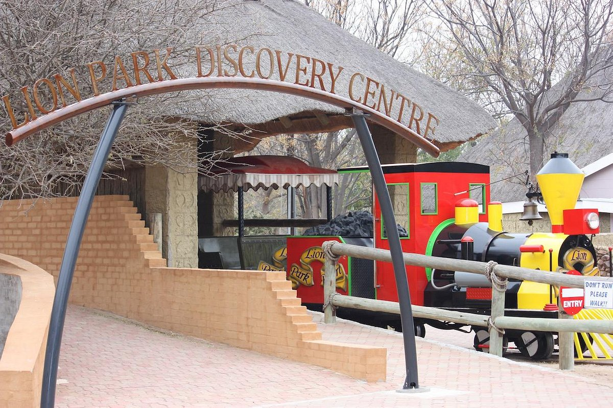
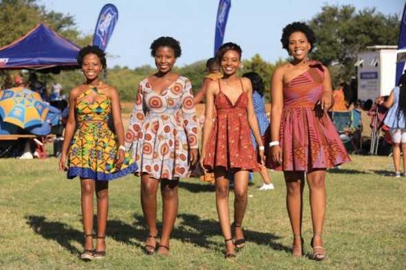

There is a 5km farm run known as the Kenmoir Farm Run.Families are encouraged to join.It is not considered a race but you will be able to compare your times to your previous efforts,those in your group as well as everyone else that is taking part.It is all about being part of a like minded community that enjoys exercise
There is an event known as African Attire, which mostly the dress code is african attire.Although the name might make one think it is a fashion festival, it is not,it is a music festival of which the african culture is promoted. This events occur every year.
Maitisong Festival is a popular festival which enables people to enjoy numerous shows of traditional music,performing arts and cultural events.It is a kind of a carnival,but with cultural and artistic content,and it takes place in Gaborone.There is also a festival known as Tlatsa Lebala which is also a music festival which different artists come together to perform at the national stadium
 The events that are still to come in this city are mostly religious events like crussades which will be conducted through online platforms that will enable easy adherance to the Covid-19 protocols